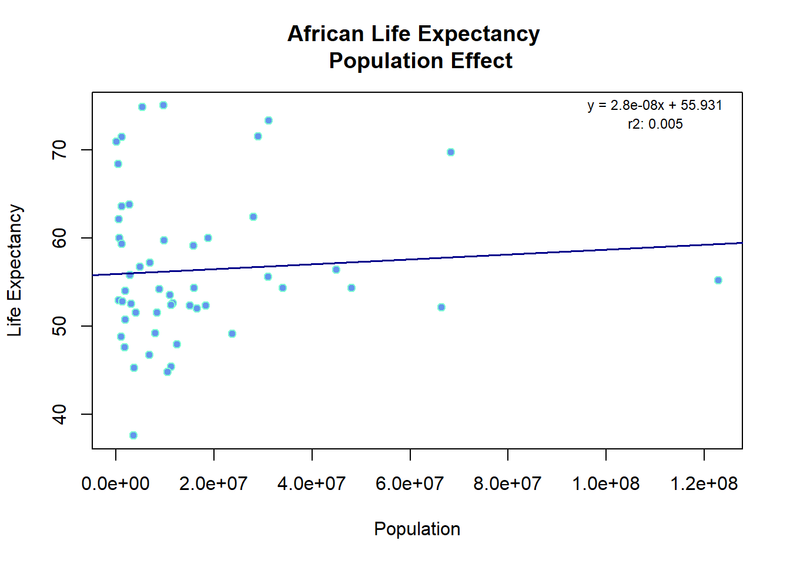

update.packages('dslabs')Error in contrib.url(repos, type): trying to use CRAN without setting a mirrorlibrary(dslabs) # to import dataset
library(tidyverse) # data aggregation
library(dplyr) # data aggregation?
data(gapminder)update.packages('dslabs')Error in contrib.url(repos, type): trying to use CRAN without setting a mirrorlibrary(dslabs) # to import dataset
library(tidyverse) # data aggregation
library(dplyr) # data aggregation?
data(gapminder)help("gapminder")str(gapminder)'data.frame': 10545 obs. of 9 variables:
$ country : Factor w/ 185 levels "Albania","Algeria",..: 1 2 3 4 5 6 7 8 9 10 ...
$ year : int 1960 1960 1960 1960 1960 1960 1960 1960 1960 1960 ...
$ infant_mortality: num 115.4 148.2 208 NA 59.9 ...
$ life_expectancy : num 62.9 47.5 36 63 65.4 ...
$ fertility : num 6.19 7.65 7.32 4.43 3.11 4.55 4.82 3.45 2.7 5.57 ...
$ population : num 1636054 11124892 5270844 54681 20619075 ...
$ gdp : num NA 1.38e+10 NA NA 1.08e+11 ...
$ continent : Factor w/ 5 levels "Africa","Americas",..: 4 1 1 2 2 3 2 5 4 3 ...
$ region : Factor w/ 22 levels "Australia and New Zealand",..: 19 11 10 2 15 21 2 1 22 21 ...summary(gapminder) country year infant_mortality life_expectancy
Albania : 57 Min. :1960 Min. : 1.50 Min. :13.20
Algeria : 57 1st Qu.:1974 1st Qu.: 16.00 1st Qu.:57.50
Angola : 57 Median :1988 Median : 41.50 Median :67.54
Antigua and Barbuda: 57 Mean :1988 Mean : 55.31 Mean :64.81
Argentina : 57 3rd Qu.:2002 3rd Qu.: 85.10 3rd Qu.:73.00
Armenia : 57 Max. :2016 Max. :276.90 Max. :83.90
(Other) :10203 NA's :1453
fertility population gdp continent
Min. :0.840 Min. :3.124e+04 Min. :4.040e+07 Africa :2907
1st Qu.:2.200 1st Qu.:1.333e+06 1st Qu.:1.846e+09 Americas:2052
Median :3.750 Median :5.009e+06 Median :7.794e+09 Asia :2679
Mean :4.084 Mean :2.701e+07 Mean :1.480e+11 Europe :2223
3rd Qu.:6.000 3rd Qu.:1.523e+07 3rd Qu.:5.540e+10 Oceania : 684
Max. :9.220 Max. :1.376e+09 Max. :1.174e+13
NA's :187 NA's :185 NA's :2972
region
Western Asia :1026
Eastern Africa : 912
Western Africa : 912
Caribbean : 741
South America : 684
Southern Europe: 684
(Other) :5586 class(gapminder)[1] "data.frame"africadata = filter(gapminder, continent == 'Africa')
head(africadata) country year infant_mortality life_expectancy fertility population
1 Algeria 1960 148.2 47.50 7.65 11124892
2 Angola 1960 208.0 35.98 7.32 5270844
3 Benin 1960 186.9 38.29 6.28 2431620
4 Botswana 1960 115.5 50.34 6.62 524029
5 Burkina Faso 1960 161.3 35.21 6.29 4829291
6 Burundi 1960 145.1 40.58 6.95 2786740
gdp continent region
1 13828152297 Africa Northern Africa
2 NA Africa Middle Africa
3 621797131 Africa Western Africa
4 124460933 Africa Southern Africa
5 596612183 Africa Western Africa
6 341126765 Africa Eastern Africastr(africadata)'data.frame': 2907 obs. of 9 variables:
$ country : Factor w/ 185 levels "Albania","Algeria",..: 2 3 18 22 26 27 29 31 32 33 ...
$ year : int 1960 1960 1960 1960 1960 1960 1960 1960 1960 1960 ...
$ infant_mortality: num 148 208 187 116 161 ...
$ life_expectancy : num 47.5 36 38.3 50.3 35.2 ...
$ fertility : num 7.65 7.32 6.28 6.62 6.29 6.95 5.65 6.89 5.84 6.25 ...
$ population : num 11124892 5270844 2431620 524029 4829291 ...
$ gdp : num 1.38e+10 NA 6.22e+08 1.24e+08 5.97e+08 ...
$ continent : Factor w/ 5 levels "Africa","Americas",..: 1 1 1 1 1 1 1 1 1 1 ...
$ region : Factor w/ 22 levels "Australia and New Zealand",..: 11 10 20 17 20 5 10 20 10 10 ...summary(africadata) country year infant_mortality life_expectancy
Algeria : 57 Min. :1960 Min. : 11.40 Min. :13.20
Angola : 57 1st Qu.:1974 1st Qu.: 62.20 1st Qu.:48.23
Benin : 57 Median :1988 Median : 93.40 Median :53.98
Botswana : 57 Mean :1988 Mean : 95.12 Mean :54.38
Burkina Faso: 57 3rd Qu.:2002 3rd Qu.:124.70 3rd Qu.:60.10
Burundi : 57 Max. :2016 Max. :237.40 Max. :77.60
(Other) :2565 NA's :226
fertility population gdp continent
Min. :1.500 Min. : 41538 Min. :4.659e+07 Africa :2907
1st Qu.:5.160 1st Qu.: 1605232 1st Qu.:8.373e+08 Americas: 0
Median :6.160 Median : 5570982 Median :2.448e+09 Asia : 0
Mean :5.851 Mean : 12235961 Mean :9.346e+09 Europe : 0
3rd Qu.:6.860 3rd Qu.: 13888152 3rd Qu.:6.552e+09 Oceania : 0
Max. :8.450 Max. :182201962 Max. :1.935e+11
NA's :51 NA's :51 NA's :637
region
Eastern Africa :912
Western Africa :912
Middle Africa :456
Northern Africa :342
Southern Africa :285
Australia and New Zealand: 0
(Other) : 0 infant_survival_rate = africadata %>%
select(infant_mortality, life_expectancy)
head(infant_survival_rate) infant_mortality life_expectancy
1 148.2 47.50
2 208.0 35.98
3 186.9 38.29
4 115.5 50.34
5 161.3 35.21
6 145.1 40.58str(infant_survival_rate)'data.frame': 2907 obs. of 2 variables:
$ infant_mortality: num 148 208 187 116 161 ...
$ life_expectancy : num 47.5 36 38.3 50.3 35.2 ...summary(infant_survival_rate) infant_mortality life_expectancy
Min. : 11.40 Min. :13.20
1st Qu.: 62.20 1st Qu.:48.23
Median : 93.40 Median :53.98
Mean : 95.12 Mean :54.38
3rd Qu.:124.70 3rd Qu.:60.10
Max. :237.40 Max. :77.60
NA's :226 african_mortality = africadata %>%
select(population, life_expectancy)
head(african_mortality) population life_expectancy
1 11124892 47.50
2 5270844 35.98
3 2431620 38.29
4 524029 50.34
5 4829291 35.21
6 2786740 40.58str(african_mortality)'data.frame': 2907 obs. of 2 variables:
$ population : num 11124892 5270844 2431620 524029 4829291 ...
$ life_expectancy: num 47.5 36 38.3 50.3 35.2 ...summary(african_mortality) population life_expectancy
Min. : 41538 Min. :13.20
1st Qu.: 1605232 1st Qu.:48.23
Median : 5570982 Median :53.98
Mean : 12235961 Mean :54.38
3rd Qu.: 13888152 3rd Qu.:60.10
Max. :182201962 Max. :77.60
NA's :51 regression = lm(infant_survival_rate$life_expectancy ~ infant_survival_rate$infant_mortality)
rsq <- function(x, y) summary(lm(infant_survival_rate$life_expectancy ~ infant_survival_rate$infant_mortality))$r.squared
r_square = round(rsq(obs, mod), 3)
# summary(regression)$coefficients - keep to sanity check
coeff = round(summary(regression)$coefficients[2],3)
y_int = round(summary(regression)$coefficients[1],3)
plot(
infant_survival_rate$infant_mortality,
infant_survival_rate$life_expectancy,
main='African Life Expectancy \n Infant Mortality Effect',
xlab='Infant Mortality',
ylab='Life Expectancy',
col='aquamarine',
bg='cornflowerblue',
pch = 21,
)
# rsq_str = expression(paste("r"^"2:"))
rsq_str = "r2: "
text(175, 75, paste0('y = ', coeff, 'x + ', y_int), cex=0.75)
text(170, 70, paste0(rsq_str, r_square), cex=0.75)
abline(
lm(
infant_survival_rate$life_expectancy ~ infant_survival_rate$infant_mortality),
col='darkblue',
lwd=1.75)
regression = lm(african_mortality$life_expectancy ~ african_mortality$population)
rsq <- function(x, y) summary(lm(african_mortality$life_expectancy ~ african_mortality$population))$r.squared
r_square = round(rsq(obs, mod), 3)
# summary(regression)$coefficients - keep to sanity check
coeff = round(summary(regression)$coefficients[2],9)
y_int = round(summary(regression)$coefficients[1],3)
plot(
african_mortality$population,
african_mortality$life_expectancy,
main='African Life Expectancy \n Population Effect',
xlab='Population',
ylab='Life Expectancy',
col='aquamarine',
bg='cornflowerblue',
pch = 21,
)
# rsq_str = expression(paste("r"^"2:"))
rsq_str = "r2: "
text(155000000, 75, paste0('y = ', coeff, 'x + ', y_int), cex=0.75)
text(155000000, 70, paste0(rsq_str, r_square), cex=0.75)
abline(
lm(
african_mortality$life_expectancy ~ african_mortality$population),
col='darkblue',
lwd=1.75)
** STILL NEED TO ANSWER QUESTION AT THE END OF THE PLOTTING SECTION** The graph attempts to demonstrate that relationship between Population increase and life expectancy overcoming life expectancy with a low R^2 is not dependent on life expectancy but possibly resulting from the stongest will survive and improving healthcare accissbility, GDP-gross domestic product, eduction and food source successfully allowing those Africans to survive and continue.
## More Data Processing
miss_inf_mort_rows = africadata %>%
filter(is.na(infant_mortality))
head(miss_inf_mort_rows) country year infant_mortality life_expectancy fertility population
1 Cape Verde 1960 NA 50.12 6.89 202316
2 Chad 1960 NA 40.95 6.25 3002596
3 Djibouti 1960 NA 45.77 6.46 83636
4 Equatorial Guinea 1960 NA 37.69 5.51 252115
5 Eritrea 1960 NA 39.03 6.90 1407631
6 Gabon 1960 NA 38.83 4.38 499189
gdp continent region
1 NA Africa Western Africa
2 750173439 Africa Middle Africa
3 NA Africa Eastern Africa
4 NA Africa Middle Africa
5 NA Africa Eastern Africa
6 887289809 Africa Middle Africamiss_inf_mort_yrs = miss_inf_mort_rows %>%
group_by(year) %>%
count(infant_mortality)
miss_inf_mort_yrs# A tibble: 23 × 3
# Groups: year [23]
year infant_mortality n
<int> <dbl> <int>
1 1960 NA 10
2 1961 NA 17
3 1962 NA 16
4 1963 NA 16
5 1964 NA 15
6 1965 NA 14
7 1966 NA 13
8 1967 NA 11
9 1968 NA 11
10 1969 NA 7
# ℹ 13 more rowsafricadata2000 = filter(africadata, year == 2000)
africadata2000 country year infant_mortality life_expectancy fertility
1 Algeria 2000 33.9 73.3 2.51
2 Angola 2000 128.3 52.3 6.84
3 Benin 2000 89.3 57.2 5.98
4 Botswana 2000 52.4 47.6 3.41
5 Burkina Faso 2000 96.2 52.6 6.59
6 Burundi 2000 93.4 46.7 7.06
7 Cameroon 2000 91.9 54.3 5.62
8 Cape Verde 2000 29.1 68.4 3.70
9 Central African Republic 2000 113.6 45.3 5.45
10 Chad 2000 105.7 51.5 7.35
11 Comoros 2000 72.7 62.1 5.32
12 Congo, Dem. Rep. 2000 107.4 54.3 7.09
13 Congo, Rep. 2000 76.6 52.5 5.13
14 Cote d'Ivoire 2000 99.5 52.0 5.38
15 Djibouti 2000 79.7 60.0 4.47
16 Egypt 2000 37.0 69.7 3.31
17 Equatorial Guinea 2000 104.8 52.9 5.77
18 Eritrea 2000 58.3 37.6 5.94
19 Ethiopia 2000 89.5 52.1 6.53
20 Gabon 2000 55.6 59.3 4.60
21 Gambia 2000 63.3 63.6 5.92
22 Ghana 2000 64.9 60.0 4.67
23 Guinea 2000 103.1 54.2 5.94
24 Guinea-Bissau 2000 106.9 52.8 5.85
25 Kenya 2000 66.5 55.6 5.01
26 Lesotho 2000 84.1 50.7 4.09
27 Liberia 2000 123.0 55.8 5.88
28 Libya 2000 24.2 74.8 3.05
29 Madagascar 2000 69.7 59.1 5.55
30 Malawi 2000 103.5 45.4 6.25
31 Mali 2000 116.0 53.5 6.84
32 Mauritania 2000 76.2 63.8 5.38
33 Mauritius 2000 16.4 71.4 1.99
34 Morocco 2000 42.2 71.5 2.70
35 Mozambique 2000 115.0 52.3 5.78
36 Namibia 2000 49.4 54.0 4.03
37 Niger 2000 101.1 52.4 7.73
38 Nigeria 2000 112.0 55.2 6.10
39 Rwanda 2000 109.2 49.2 5.90
40 Senegal 2000 68.5 59.7 5.56
41 Seychelles 2000 12.3 70.9 2.15
42 Sierra Leone 2000 143.3 51.5 5.92
43 South Africa 2000 54.0 56.4 2.87
44 Sudan 2000 67.8 62.4 5.44
45 Swaziland 2000 84.0 48.8 4.21
46 Tanzania 2000 80.3 54.3 5.69
47 Togo 2000 76.2 56.7 5.29
48 Tunisia 2000 26.3 75.0 2.11
49 Uganda 2000 90.0 49.1 6.87
50 Zambia 2000 97.6 44.8 6.07
51 Zimbabwe 2000 63.5 47.9 4.07
population gdp continent region
1 31183658 54790058957 Africa Northern Africa
2 15058638 9129180361 Africa Middle Africa
3 6949366 2254838685 Africa Western Africa
4 1736579 5632391130 Africa Southern Africa
5 11607944 2610945549 Africa Western Africa
6 6767073 835334807 Africa Eastern Africa
7 15927713 10075040331 Africa Middle Africa
8 438737 539227053 Africa Western Africa
9 3726048 959413051 Africa Middle Africa
10 8343321 1385050964 Africa Middle Africa
11 547696 201900820 Africa Eastern Africa
12 48048664 4305797176 Africa Middle Africa
13 3109269 3219893817 Africa Middle Africa
14 16517948 10417006096 Africa Western Africa
15 722562 551230862 Africa Eastern Africa
16 68334905 99838540997 Africa Northern Africa
17 530896 1254223037 Africa Middle Africa
18 3535156 633600000 Africa Eastern Africa
19 66443603 8179533779 Africa Eastern Africa
20 1231548 5067838984 Africa Middle Africa
21 1228863 786665264 Africa Western Africa
22 18824994 4977488790 Africa Western Africa
23 8799165 3112362568 Africa Western Africa
24 1315455 215455490 Africa Western Africa
25 31065820 12691278914 Africa Eastern Africa
26 1856225 745832990 Africa Southern Africa
27 2891968 529064647 Africa Western Africa
28 5337264 33896600871 Africa Northern Africa
29 15744811 3877575177 Africa Eastern Africa
30 11193230 1743506520 Africa Eastern Africa
31 11046926 2422469641 Africa Western Africa
32 2711421 1293653473 Africa Western Africa
33 1185143 4582562398 Africa Eastern Africa
34 28950553 37020609825 Africa Northern Africa
35 18264536 4248747769 Africa Eastern Africa
36 1897953 3908501441 Africa Southern Africa
37 11224523 1798365123 Africa Western Africa
38 122876723 45983449593 Africa Western Africa
39 8021875 1734921293 Africa Eastern Africa
40 9860578 4691828357 Africa Western Africa
41 81154 614879765 Africa Eastern Africa
42 4060709 635876870 Africa Western Africa
43 44896856 132877648091 Africa Southern Africa
44 28079664 12366140066 Africa Northern Africa
45 1063715 1524452437 Africa Southern Africa
46 33991590 10185786171 Africa Eastern Africa
47 4874735 1294243543 Africa Western Africa
48 9699192 21473261837 Africa Northern Africa
49 23757636 6193246632 Africa Eastern Africa
50 10585220 3237716325 Africa Eastern Africa
51 12499981 6689957610 Africa Eastern Africastr(africadata2000)'data.frame': 51 obs. of 9 variables:
$ country : Factor w/ 185 levels "Albania","Algeria",..: 2 3 18 22 26 27 29 31 32 33 ...
$ year : int 2000 2000 2000 2000 2000 2000 2000 2000 2000 2000 ...
$ infant_mortality: num 33.9 128.3 89.3 52.4 96.2 ...
$ life_expectancy : num 73.3 52.3 57.2 47.6 52.6 46.7 54.3 68.4 45.3 51.5 ...
$ fertility : num 2.51 6.84 5.98 3.41 6.59 7.06 5.62 3.7 5.45 7.35 ...
$ population : num 31183658 15058638 6949366 1736579 11607944 ...
$ gdp : num 5.48e+10 9.13e+09 2.25e+09 5.63e+09 2.61e+09 ...
$ continent : Factor w/ 5 levels "Africa","Americas",..: 1 1 1 1 1 1 1 1 1 1 ...
$ region : Factor w/ 22 levels "Australia and New Zealand",..: 11 10 20 17 20 5 10 20 10 10 ...summary(africadata2000) country year infant_mortality life_expectancy
Algeria : 1 Min. :2000 Min. : 12.30 Min. :37.60
Angola : 1 1st Qu.:2000 1st Qu.: 60.80 1st Qu.:51.75
Benin : 1 Median :2000 Median : 80.30 Median :54.30
Botswana : 1 Mean :2000 Mean : 78.93 Mean :56.36
Burkina Faso: 1 3rd Qu.:2000 3rd Qu.:103.30 3rd Qu.:60.00
Burundi : 1 Max. :2000 Max. :143.30 Max. :75.00
(Other) :45
fertility population gdp continent
Min. :1.990 Min. : 81154 Min. :2.019e+08 Africa :51
1st Qu.:4.150 1st Qu.: 2304687 1st Qu.:1.274e+09 Americas: 0
Median :5.550 Median : 8799165 Median :3.238e+09 Asia : 0
Mean :5.156 Mean : 15659800 Mean :1.155e+10 Europe : 0
3rd Qu.:5.960 3rd Qu.: 17391242 3rd Qu.:8.654e+09 Oceania : 0
Max. :7.730 Max. :122876723 Max. :1.329e+11
region
Eastern Africa :16
Western Africa :16
Middle Africa : 8
Northern Africa : 6
Southern Africa : 5
Australia and New Zealand: 0
(Other) : 0 african_mortality2000 = africadata2000 %>%
select(population, life_expectancy)
head(african_mortality2000) population life_expectancy
1 31183658 73.3
2 15058638 52.3
3 6949366 57.2
4 1736579 47.6
5 11607944 52.6
6 6767073 46.7infant_survival_rate2000 = africadata2000 %>%
select(infant_mortality, life_expectancy)
head(african_mortality2000) population life_expectancy
1 31183658 73.3
2 15058638 52.3
3 6949366 57.2
4 1736579 47.6
5 11607944 52.6
6 6767073 46.7regression = lm(infant_survival_rate2000$life_expectancy ~ infant_survival_rate2000$infant_mortality)
rsq <- function(x, y) summary(lm(infant_survival_rate2000$life_expectancy ~ infant_survival_rate2000$infant_mortality))$r.squared
r_square = round(rsq(obs, mod), 3)
# summary(regression)$coefficients - keep to sanity check
coeff = round(summary(regression)$coefficients[2],3)
y_int = round(summary(regression)$coefficients[1],3)
plot(
infant_survival_rate2000$infant_mortality,
infant_survival_rate2000$life_expectancy,
main='African Life Expectancy \n Infant Mortality Effect',
xlab='Infant Mortality',
ylab='Life Expectancy',
col='aquamarine',
bg='cornflowerblue',
pch = 21,
)
# rsq_str = expression(paste("r"^"2:"))
rsq_str = "r2: "
text(130, 75, paste0('y = ', coeff, 'x + ', y_int), cex=0.75)
text(130, 73, paste0(rsq_str, r_square), cex=0.75)
abline(
lm(
infant_survival_rate2000$life_expectancy ~ infant_survival_rate2000$infant_mortality),
col='darkblue',
lwd=1.75)
regression = lm(african_mortality2000$life_expectancy ~ african_mortality2000$population)
rsq <- function(x, y) summary(lm(african_mortality2000$life_expectancy ~ african_mortality2000$population))$r.squared
r_square = round(rsq(obs, mod), 3)
# summary(regression)$coefficients - keep to sanity check
coeff = round(summary(regression)$coefficients[2],9)
y_int = round(summary(regression)$coefficients[1],3)
plot(
african_mortality2000$population,
african_mortality2000$life_expectancy,
main='African Life Expectancy \n Population Effect',
xlab='Population',
ylab='Life Expectancy',
col='aquamarine',
bg='cornflowerblue',
pch = 21,
)
# rsq_str = expression(paste("r"^"2:"))
rsq_str = "r2: "
text(110000000, 75, paste0('y = ', coeff, 'x + ', y_int), cex=0.75)
text(110000000, 73, paste0(rsq_str, r_square), cex=0.75)
abline(
lm(
african_mortality2000$life_expectancy ~ african_mortality2000$population),
col='darkblue',
lwd=1.75)
********************This code added by Edward Cruz************************************************
fit1 = lm(infant_survival_rate2000$life_expectancy ~ infant_survival_rate2000$infant_mortality)
summary(fit1)
Call:
lm(formula = infant_survival_rate2000$life_expectancy ~ infant_survival_rate2000$infant_mortality)
Residuals:
Min 1Q Median 3Q Max
-22.6651 -3.7087 0.9914 4.0408 8.6817
Coefficients:
Estimate Std. Error t value Pr(>|t|)
(Intercept) 71.29331 2.42611 29.386 < 2e-16
infant_survival_rate2000$infant_mortality -0.18916 0.02869 -6.594 2.83e-08
(Intercept) ***
infant_survival_rate2000$infant_mortality ***
---
Signif. codes: 0 '***' 0.001 '**' 0.01 '*' 0.05 '.' 0.1 ' ' 1
Residual standard error: 6.221 on 49 degrees of freedom
Multiple R-squared: 0.4701, Adjusted R-squared: 0.4593
F-statistic: 43.48 on 1 and 49 DF, p-value: 2.826e-08fit1 = lm(life_expectancy ~ log(infant_mortality), data=infant_survival_rate2000)
summary(fit1)
Call:
lm(formula = life_expectancy ~ log(infant_mortality), data = infant_survival_rate2000)
Residuals:
Min 1Q Median 3Q Max
-21.079 -3.068 1.157 3.511 8.998
Coefficients:
Estimate Std. Error t value Pr(>|t|)
(Intercept) 106.765 6.681 15.981 < 2e-16 ***
log(infant_mortality) -11.827 1.556 -7.601 7.83e-10 ***
---
Signif. codes: 0 '***' 0.001 '**' 0.01 '*' 0.05 '.' 0.1 ' ' 1
Residual standard error: 5.79 on 49 degrees of freedom
Multiple R-squared: 0.5411, Adjusted R-squared: 0.5317
F-statistic: 57.77 on 1 and 49 DF, p-value: 7.827e-10# Linear regression
fit1 = lm(life_expectancy ~ infant_mortality, data=infant_survival_rate2000)
summary(fit1)
Call:
lm(formula = life_expectancy ~ infant_mortality, data = infant_survival_rate2000)
Residuals:
Min 1Q Median 3Q Max
-22.6651 -3.7087 0.9914 4.0408 8.6817
Coefficients:
Estimate Std. Error t value Pr(>|t|)
(Intercept) 71.29331 2.42611 29.386 < 2e-16 ***
infant_mortality -0.18916 0.02869 -6.594 2.83e-08 ***
---
Signif. codes: 0 '***' 0.001 '**' 0.01 '*' 0.05 '.' 0.1 ' ' 1
Residual standard error: 6.221 on 49 degrees of freedom
Multiple R-squared: 0.4701, Adjusted R-squared: 0.4593
F-statistic: 43.48 on 1 and 49 DF, p-value: 2.826e-08# Polynomial regression of degree 2
fit2 = lm(life_expectancy ~ poly(infant_mortality, 2), data=infant_survival_rate2000)
summary(fit2)
Call:
lm(formula = life_expectancy ~ poly(infant_mortality, 2), data = infant_survival_rate2000)
Residuals:
Min 1Q Median 3Q Max
-20.9337 -2.6406 0.6343 3.7509 9.2568
Coefficients:
Estimate Std. Error t value Pr(>|t|)
(Intercept) 56.3627 0.7914 71.221 < 2e-16 ***
poly(infant_mortality, 2)1 -41.0199 5.6516 -7.258 2.96e-09 ***
poly(infant_mortality, 2)2 19.0567 5.6516 3.372 0.00148 **
---
Signif. codes: 0 '***' 0.001 '**' 0.01 '*' 0.05 '.' 0.1 ' ' 1
Residual standard error: 5.652 on 48 degrees of freedom
Multiple R-squared: 0.5716, Adjusted R-squared: 0.5538
F-statistic: 32.02 on 2 and 48 DF, p-value: 1.459e-09# Plotting
plot(
infant_survival_rate2000$infant_mortality,
infant_survival_rate2000$life_expectancy,
main='Infant Mortality vs Life Expectancy',
xlab='Infant Mortality',
ylab='Life Expectancy',
col='aquamarine',
pch=19
)
# Add linear regression line
abline(fit1, col='darkblue')
# Add polynomial regression line
new_data <- data.frame(infant_mortality = seq(min(infant_survival_rate2000$infant_mortality), max(infant_survival_rate2000$infant_mortality), length.out=100))
lines(new_data$infant_mortality, predict(fit2, new_data), col='cornflowerblue')
fit2 = lm(african_mortality2000$life_expectancy ~ african_mortality2000$population)
summary(fit2)
Call:
lm(formula = african_mortality2000$life_expectancy ~ african_mortality2000$population)
Residuals:
Min 1Q Median 3Q Max
-18.429 -4.602 -2.568 3.800 18.802
Coefficients:
Estimate Std. Error t value Pr(>|t|)
(Intercept) 5.593e+01 1.468e+00 38.097 <2e-16 ***
african_mortality2000$population 2.756e-08 5.459e-08 0.505 0.616
---
Signif. codes: 0 '***' 0.001 '**' 0.01 '*' 0.05 '.' 0.1 ' ' 1
Residual standard error: 8.524 on 49 degrees of freedom
Multiple R-squared: 0.005176, Adjusted R-squared: -0.01513
F-statistic: 0.2549 on 1 and 49 DF, p-value: 0.6159# Logarithmic regression
fit2 = lm(life_expectancy ~ log(population), data=african_mortality2000)
summary(fit2)
Call:
lm(formula = life_expectancy ~ log(population), data = african_mortality2000)
Residuals:
Min 1Q Median 3Q Max
-19.113 -4.809 -1.554 3.907 18.863
Coefficients:
Estimate Std. Error t value Pr(>|t|)
(Intercept) 65.3243 12.5203 5.217 3.65e-06 ***
log(population) -0.5711 0.7943 -0.719 0.476
---
Signif. codes: 0 '***' 0.001 '**' 0.01 '*' 0.05 '.' 0.1 ' ' 1
Residual standard error: 8.502 on 49 degrees of freedom
Multiple R-squared: 0.01044, Adjusted R-squared: -0.009755
F-statistic: 0.517 on 1 and 49 DF, p-value: 0.4755# Linear regression
fit1 = lm(life_expectancy ~ population, data=african_mortality2000)
summary(fit1)
Call:
lm(formula = life_expectancy ~ population, data = african_mortality2000)
Residuals:
Min 1Q Median 3Q Max
-18.429 -4.602 -2.568 3.800 18.802
Coefficients:
Estimate Std. Error t value Pr(>|t|)
(Intercept) 5.593e+01 1.468e+00 38.097 <2e-16 ***
population 2.756e-08 5.459e-08 0.505 0.616
---
Signif. codes: 0 '***' 0.001 '**' 0.01 '*' 0.05 '.' 0.1 ' ' 1
Residual standard error: 8.524 on 49 degrees of freedom
Multiple R-squared: 0.005176, Adjusted R-squared: -0.01513
F-statistic: 0.2549 on 1 and 49 DF, p-value: 0.6159# Polynomial regression of degree 2
fit2 = lm(life_expectancy ~ poly(population, 2), data=african_mortality2000)
summary(fit2)
Call:
lm(formula = life_expectancy ~ poly(population, 2), data = african_mortality2000)
Residuals:
Min 1Q Median 3Q Max
-18.204 -4.654 -2.329 4.037 18.866
Coefficients:
Estimate Std. Error t value Pr(>|t|)
(Intercept) 56.363 1.204 46.811 <2e-16 ***
poly(population, 2)1 4.304 8.599 0.501 0.619
poly(population, 2)2 -3.386 8.599 -0.394 0.696
---
Signif. codes: 0 '***' 0.001 '**' 0.01 '*' 0.05 '.' 0.1 ' ' 1
Residual standard error: 8.599 on 48 degrees of freedom
Multiple R-squared: 0.008379, Adjusted R-squared: -0.03294
F-statistic: 0.2028 on 2 and 48 DF, p-value: 0.8171# Plotting
plot(
african_mortality2000$population,
african_mortality2000$life_expectancy,
main='Population vs Life Expectancy',
xlab='Population',
ylab='Life Expectancy',
col='aquamarine',
pch=19
)
# Add linear regression line
abline(fit1, col='darkblue')
# Add polynomial regression line
new_data <- data.frame(population = seq(min(african_mortality2000$population),
max(african_mortality2000$population), length.out=100))
lines(new_data$population, predict(fit2, new_data), col='cornflowerblue')
# Add a legend to differentiate the lines
legend("topright", legend=c("Linear Fit", "Polynomial Fit (degree 2)"), col=c("darkblue", "cornflowerblue"), lwd=2)
The African population and life expectancy analysis shows no significant relationship between population size and life expectancy in African countries according to this linear model. The very low R-squared value indicates that population size explains only a tiny fraction of the variation in life expectancy. This suggests that other factors, such as healthcare access, economic conditions, education, and other social determinants, are likely much more important in explaining differences in life expectancy across African countries. TO reiterate, there is tremendous suffering and mortality with the children of the populations however the resiliency of this country has been successfully documented indicating the economics, education and healthcare is improving to continue allowing the population with access to these areas to successfully prosper and survive.
*** This part contributed by Leonel Salazar, IGE436 ***
library(dslabs) # to import dataset
library(tidyverse) # data aggregation
library(dplyr) # data aggregation?
library(renv)
library(caret)
data("stars")help("stars")str(stars)'data.frame': 96 obs. of 4 variables:
$ star : Factor w/ 95 levels "*40EridaniA",..: 87 85 48 38 33 92 49 79 77 47 ...
$ magnitude: num 4.8 1.4 -3.1 -0.4 4.3 0.5 -0.6 -7.2 2.6 -5.7 ...
$ temp : int 5840 9620 7400 4590 5840 9900 5150 12140 6580 3200 ...
$ type : chr "G" "A" "F" "K" ...summary(stars) star magnitude temp type
Altair : 2 Min. :-8.000 Min. : 2500 Length:96
*40EridaniA: 1 1st Qu.:-1.800 1st Qu.: 3168 Class :character
*40EridaniB: 1 Median : 2.400 Median : 5050 Mode :character
*40EridaniC: 1 Mean : 4.257 Mean : 8752
*61CygniA : 1 3rd Qu.:11.325 3rd Qu.: 9900
*61CygniB : 1 Max. :17.000 Max. :33600
(Other) :89 class(stars)[1] "data.frame"Type_Magnitude = stars %>%
select(type, magnitude )
head(Type_Magnitude) type magnitude
1 G 4.8
2 A 1.4
3 F -3.1
4 K -0.4
5 G 4.3
6 A 0.5str(Type_Magnitude)'data.frame': 96 obs. of 2 variables:
$ type : chr "G" "A" "F" "K" ...
$ magnitude: num 4.8 1.4 -3.1 -0.4 4.3 0.5 -0.6 -7.2 2.6 -5.7 ...# Convert to factor (default order is alphabetical)
Type_Magnitude$type <- as.factor(Type_Magnitude$type)
str(Type_Magnitude)'data.frame': 96 obs. of 2 variables:
$ type : Factor w/ 10 levels "A","B","DA","DB",..: 7 1 6 8 7 1 7 2 6 9 ...
$ magnitude: num 4.8 1.4 -3.1 -0.4 4.3 0.5 -0.6 -7.2 2.6 -5.7 ...summary(Type_Magnitude) type magnitude
M :32 Min. :-8.000
B :19 1st Qu.:-1.800
K :16 Median : 2.400
A :13 Mean : 4.257
F : 7 3rd Qu.:11.325
G : 4 Max. :17.000
(Other): 5 Type_Temp = stars %>%
select(type, temp)
head(Type_Temp) type temp
1 G 5840
2 A 9620
3 F 7400
4 K 4590
5 G 5840
6 A 9900Type_Temp$type <- as.factor(Type_Temp$type)
# Convert to numeric
Type_Temp$temp <- as.numeric(Type_Temp$temp)
str(Type_Temp)'data.frame': 96 obs. of 2 variables:
$ type: Factor w/ 10 levels "A","B","DA","DB",..: 7 1 6 8 7 1 7 2 6 9 ...
$ temp: num 5840 9620 7400 4590 5840 ...summary(Type_Temp) type temp
M :32 Min. : 2500
B :19 1st Qu.: 3168
K :16 Median : 5050
A :13 Mean : 8752
F : 7 3rd Qu.: 9900
G : 4 Max. :33600
(Other): 5 Mag_Temp = stars %>%
select(magnitude, temp)
head(Mag_Temp) magnitude temp
1 4.8 5840
2 1.4 9620
3 -3.1 7400
4 -0.4 4590
5 4.3 5840
6 0.5 9900hist(Type_Magnitude$magnitude)
hist(Type_Temp$temp)
regression = lm(Mag_Temp$magnitude ~ Mag_Temp$temp)
rsq <- function(x, y) summary(lm(Mag_Temp$magnitude ~ Mag_Temp$temp))$r.squared
r_square = round(rsq(obs, mod), 3)
# summary(regression)$coefficients - keep to sanity check
coeff = round(summary(regression)$coefficients[2],3)
y_int = round(summary(regression)$coefficients[1],3)
plot(
Mag_Temp$magnitude,
Mag_Temp$temp,
main='Magnitude and temperature of star',
xlab='Magnitude',
ylab='Temperature',
col='lightblue',
bg='black',
pch = 21,
)
# rsq_str = expression(paste("r"^"2:"))
rsq_str = "r2: "
text(175, 75, paste0('y = ', coeff, 'x + ', y_int), cex=0.75)
text(170, 70, paste0(rsq_str, r_square), cex=0.75)
abline(
lm(
Mag_Temp$magnitude ~ Mag_Temp$temp),
col='red',
lwd=1.75)
fit1 = lm(Mag_Temp$magnitude ~ Mag_Temp$temp)
summary(fit1)
Call:
lm(formula = Mag_Temp$magnitude ~ Mag_Temp$temp)
Residuals:
Min 1Q Median 3Q Max
-13.8555 -2.9911 0.3612 4.1403 12.5023
Coefficients:
Estimate Std. Error t value Pr(>|t|)
(Intercept) 9.531e+00 8.850e-01 10.770 < 2e-16 ***
Mag_Temp$temp -6.026e-04 7.597e-05 -7.932 4.44e-12 ***
---
Signif. codes: 0 '***' 0.001 '**' 0.01 '*' 0.05 '.' 0.1 ' ' 1
Residual standard error: 5.722 on 94 degrees of freedom
Multiple R-squared: 0.4009, Adjusted R-squared: 0.3946
F-statistic: 62.91 on 1 and 94 DF, p-value: 4.442e-12*** Based on this analysis, there’s a statistically significant negative linear relationship between “temp” and “magnitude” in the “Mag_Temp” data. The model explains about 40% of the variance in “magnitude. ***
regression2 = lm(Type_Magnitude$magnitude ~ Type_Magnitude$type)
rsq <- function(x, y) summary(lm(Type_Magnitude$magnitude ~ Type_Magnitude$type))$r.squared
r_square = round(rsq(obs, mod), 3)
# summary(regression)$coefficients - keep to sanity check
coeff = round(summary(regression)$coefficients[2],3)
y_int = round(summary(regression)$coefficients[1],3)
plot(
Type_Magnitude$magnitude,
Type_Magnitude$type,
main='Magnitude by type of star',
xlab='Magnitude',
ylab='Type',
col='lightblue',
bg='black',
pch = 21,
)
# rsq_str = expression(paste("r"^"2:"))
rsq_str = "r2: "
text(175, 75, paste0('y = ', coeff, 'x + ', y_int), cex=0.75)
text(170, 70, paste0(rsq_str, r_square), cex=0.75)
abline(
lm(
Type_Magnitude$magnitude ~ Type_Magnitude$type),
col='red',
lwd=1.75)
fit2 = lm(Type_Magnitude$magnitude ~ Type_Magnitude$type)
summary(fit2)
Call:
lm(formula = Type_Magnitude$magnitude ~ Type_Magnitude$type)
Residuals:
Min 1Q Median 3Q Max
-17.1844 -1.1054 0.4156 1.9196 5.5571
Coefficients:
Estimate Std. Error t value Pr(>|t|)
(Intercept) 0.3615 1.1097 0.326 0.745376
Type_Magnitude$typeB -3.8931 1.4402 -2.703 0.008274 **
Type_Magnitude$typeDA 10.7885 3.0391 3.550 0.000628 ***
Type_Magnitude$typeDB 13.8385 4.1522 3.333 0.001269 **
Type_Magnitude$typeDF 12.6385 4.1522 3.044 0.003099 **
Type_Magnitude$typeF -3.3187 1.8758 -1.769 0.080403 .
Type_Magnitude$typeG 3.1885 2.2878 1.394 0.167000
Type_Magnitude$typeK 3.7947 1.4940 2.540 0.012885 *
Type_Magnitude$typeM 11.1228 1.3160 8.452 6.41e-13 ***
Type_Magnitude$typeO -6.2615 4.1522 -1.508 0.135222
---
Signif. codes: 0 '***' 0.001 '**' 0.01 '*' 0.05 '.' 0.1 ' ' 1
Residual standard error: 4.001 on 86 degrees of freedom
Multiple R-squared: 0.732, Adjusted R-squared: 0.704
F-statistic: 26.1 on 9 and 86 DF, p-value: < 2.2e-16*** Based on this analysis, there’s a statistically significant relationship between “type” and “magnitude” in the “Type_Magnitude” data. The model explains about 73% of the variance in “magnitude ***
regression3 = lm(Type_Temp$temp ~ Type_Temp$type)
rsq <- function(x, y) summary(lm(Type_Temp$temp ~ Type_Temp$type))$r.squared
r_square = round(rsq(obs, mod), 3)
# summary(regression)$coefficients - keep to sanity check
coeff = round(summary(regression)$coefficients[2],3)
y_int = round(summary(regression)$coefficients[1],3)
plot(
Type_Temp$temp,
Type_Temp$type,
main='Temp by type of star',
xlab='Temp',
ylab='Type',
col='lightblue',
bg='black',
pch = 21,
)
# rsq_str = expression(paste("r"^"2:"))
rsq_str = "r2: "
text(175, 75, paste0('y = ', coeff, 'x + ', y_int), cex=0.75)
text(170, 70, paste0(rsq_str, r_square), cex=0.75)
abline(
lm(
Type_Temp$temp ~ Type_Temp$type),
col='red',
lwd=1.75)
fit3 = lm(Type_Temp$temp ~ Type_Temp$type)
summary(fit3)
Call:
lm(formula = Type_Temp$temp ~ Type_Temp$type)
Residuals:
Min 1Q Median 3Q Max
-10200.0 -268.8 0.0 436.2 6800.0
Coefficients:
Estimate Std. Error t value Pr(>|t|)
(Intercept) 9355.4 739.1 12.658 < 2e-16 ***
Type_Temp$typeB 11844.6 959.2 12.349 < 2e-16 ***
Type_Temp$typeDA 3044.6 2024.0 1.504 0.1362
Type_Temp$typeDB 3644.6 2765.4 1.318 0.1910
Type_Temp$typeDF 344.6 2765.4 0.125 0.9011
Type_Temp$typeF -2515.4 1249.3 -2.013 0.0472 *
Type_Temp$typeG -3860.4 1523.6 -2.534 0.0131 *
Type_Temp$typeK -4891.6 995.0 -4.916 4.19e-06 ***
Type_Temp$typeM -6436.0 876.4 -7.343 1.10e-10 ***
Type_Temp$typeO 24244.6 2765.4 8.767 1.47e-13 ***
---
Signif. codes: 0 '***' 0.001 '**' 0.01 '*' 0.05 '.' 0.1 ' ' 1
Residual standard error: 2665 on 86 degrees of freedom
Multiple R-squared: 0.8924, Adjusted R-squared: 0.8811
F-statistic: 79.22 on 9 and 86 DF, p-value: < 2.2e-16*** The very high R-squared value (0.8924) suggests a strong relationship between “type” and “temp.” However, it’s important to be cautious with such a high value, as it could indicate overfitting ***
*** It might be possible to accurately predict what type of star a star may be by knowing the temperature and magnitude of a star. We would need better data because we can see in the histograms that the data is not linear or very normal. We would have to transform the data to get more accurate and reliable results. ***